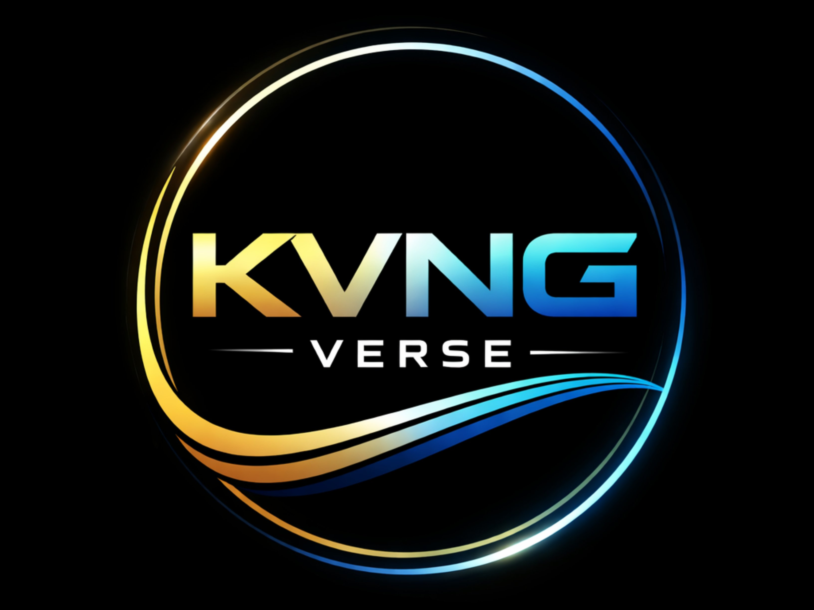
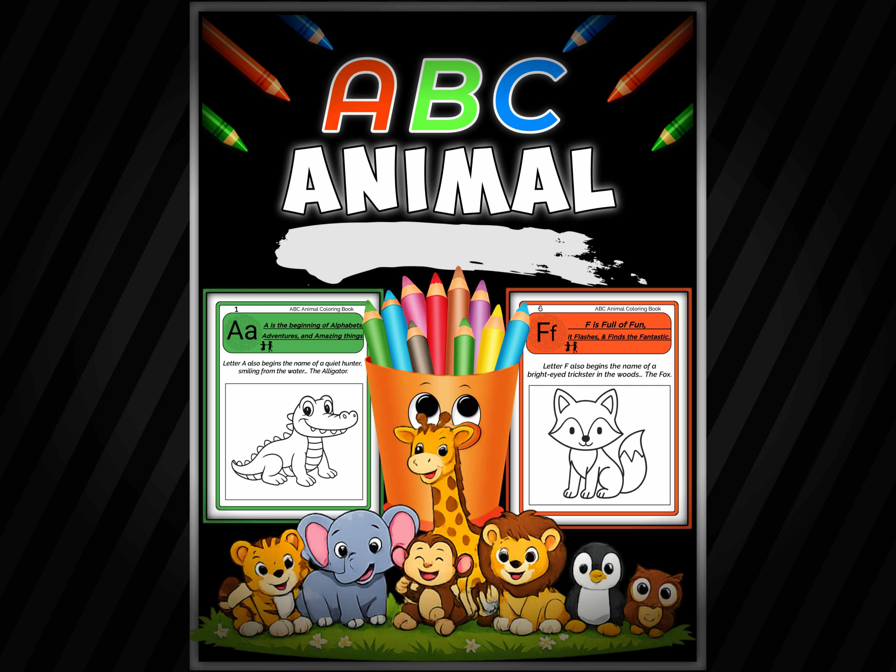
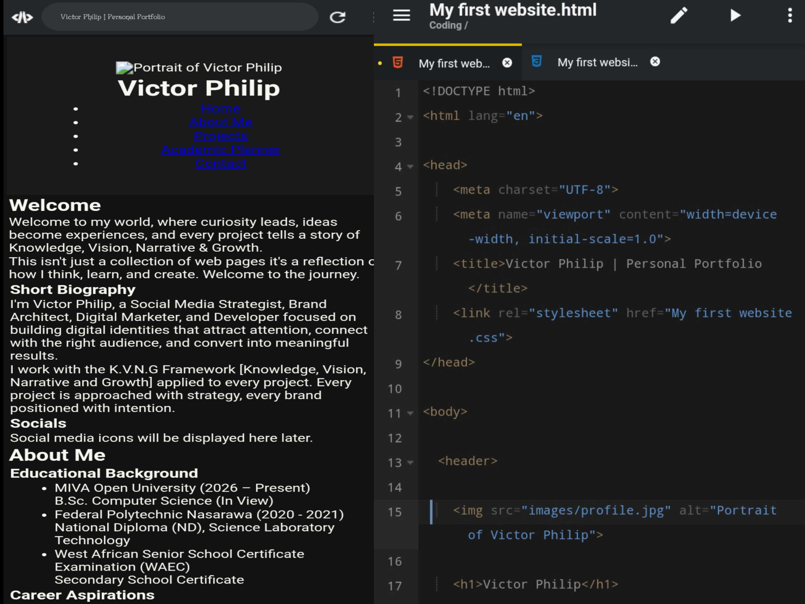
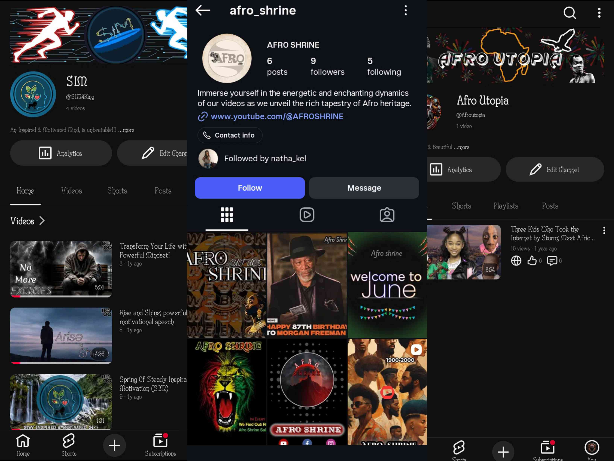

Welcome to my world, where curiosity leads, ideas become experiences, and every project tells a story of Knowledge, Vision, Narrative & Growth.
This isn't just a collection of web pages it's a reflection of how I think, learn, and create. Welcome to the journey.
Short Biography
I'm Victor Philip, a Social Media Strategist, Brand Architect, Digital Marketer, and Developer focused on building digital identities that attract attention, connect with the right audience, and convert into meaningful results.
I work with the K.V.N.G Framework [Knowledge, Vision, Narrative and Growth] applied to every project. Every project is approached with strategy, every brand positioned with intention.
About Me
Educational Background
MIVA Open University (2026 – Present)
B.Sc. Computer Science (In View)
Federal Polytechnic Nasarawa (2020 - 2021)
National Diploma (ND), S.L.T
West African Senior School Certificate (WAEC)
Secondary School Certificate
Career Aspirations
My aspiration is to become a multidisciplinary technology professional who transforms ideas into meaningful digital experiences. I am committed to mastering software development, digital strategy, branding, and creative problem solving to build solutions that are innovative, impactful, and people centric.
I believe technology is more than writing code or creating content, it's about creating opportunities, solving real-world problems, and leaving a positive, lasting impact. Through continuous learning and purposeful innovation, I strive to develop products, brands, and experiences that inspire growth and make a meaningful difference.
Technical Skills
Professional Skills
Time Management
Creative Problem Solving
Project & Workflow Management
Organization & Attention to Detail
Communication & Client Relations
Brand Architect & Digital Strategy
Copywriting
Content Strategy
Digital Marketing
Brand Positioning
Social Media Strategy
SEO & Algorithm Analysis
Creative & Technical
Video Editing
Basic Graphic Design
AI Prompt Engineering
Computer Literacy & Digital Tool Proficiency
Programming & Web Dev(Currently Learning)
Full-Stack Development
Software Engineering
Cloud Computing
Artificial Intelligence
Hobbies & Interests
Beyond academics and professional work, I enjoy exploring technology, building creative digital projects, and continuously learning new skills. My interests include coding, reading, music, artificial intelligence, content creation, and discovering innovative ways to combine technology with creativity to solve real-world problems.
projects

KVNG VERSE
A digital media and creative brand focused on Knowledge, Vision, Narrative & Growth through branding, storytelling and digital strategy.
KVNG VERSE is a digital media and creative brand built around the principles of Knowledge, Vision, Narrative & Growth (K.V.N.G.). The project focuses on helping individuals and brands build meaningful digital identities through strategic content, storytelling, branding, and digital marketing.
Currently in development, the project is undergoing refinement to establish a strong foundation, ensuring every element aligns with its long term vision before its official launch.
visit kvng verse

ABC Animal Coloring Book for Kids
An educational colouring book created to help young children learn
the alphabet through engaging animal illustrations.
A creatively designed educational coloring book developed for children aged 3–5 to make learning the alphabet fun through engaging animal illustrations. The project combines creativity, educational content, and publishing principles while
Currently in the final stage of development, the project is being refined to ensure a high-quality learning experience before publication on Amazon KDP.

Personal Portfolio Website
A responsive portfolio website showcasing my background, projects,
skills and career aspirations while demonstrating my web development journey.
A responsive personal portfolio website designed and developed to showcase my background, projects, technical skills, career aspirations, and contact information. The website also features an interactive academic planner and a validated contact form, demonstrating my growing skills in HTML, CSS, and JavaScript
View My Website

Operation Monetization
A long-term digital growth project documenting my journey,
lessons and strategy for building sustainable online brands.
Operation Monetization is the project that transformed my approach to digital growth. My journey began with Afro Shrine, a YouTube channel I launched with ambition but without a clear strategy. As I created content, I learned by studying YouTube, experimenting with content formats, and understanding what attracts and retains an audience. Just as I was approaching monetization, the channel was terminated due to a policy violation related to circumvention.
Like many creators, my first reaction was to start over. I launched SIM4KINGZ, and later Afro Utopia, hoping to rebuild quickly. It didn't take long to realize that creating new channels without a long-term plan would only repeat the same mistakes.That realization became the foundation of Operation Monetization.
Since then, I've invested in understanding the principles behind sustainable digital growth such as search engine optimization (SEO), audience research, retention strategy, content strategy, platform algorithms, brand positioning, and community management. I've also applied these skills while managing social media accounts in both internship and professional roles, gaining practical experience in building online presence and engaging audiences.
Today, Operation Monetization represents more than a YouTube project. It is my commitment to building digital brands with strategy before speed, purpose before popularity, and long-term value before short-term results.
These platforms document not only my work, but also the lessons, growth, and resilience that continue to shape my journey as a digital strategist and brand architect.
Academic Planner
Personal Planner
No
Task
Due Date
Status
Delete
1
Pending
Contact Me
Let's Build Something Great Together
Whether you have a project, collaboration, career opportunity,
or simply want to connect, I'd love to hear from you.
Feel free to reach out through any of my social platforms.